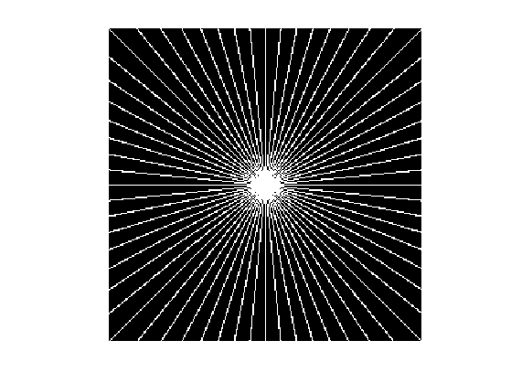
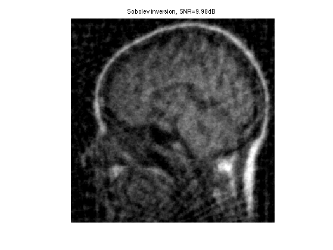
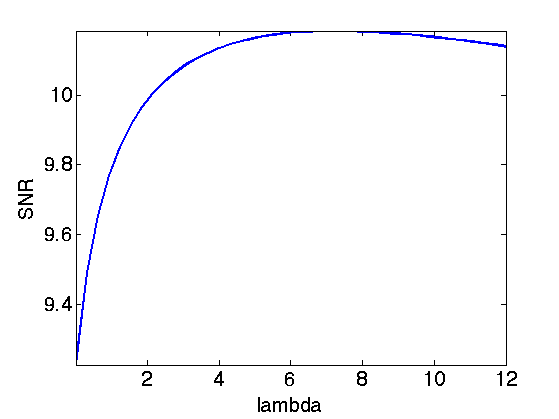
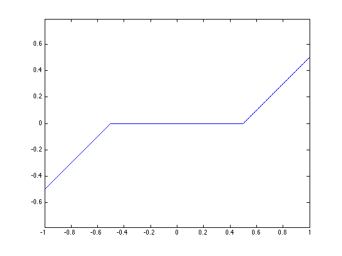
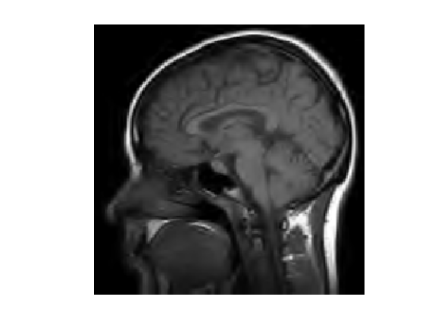
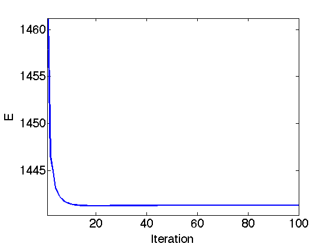
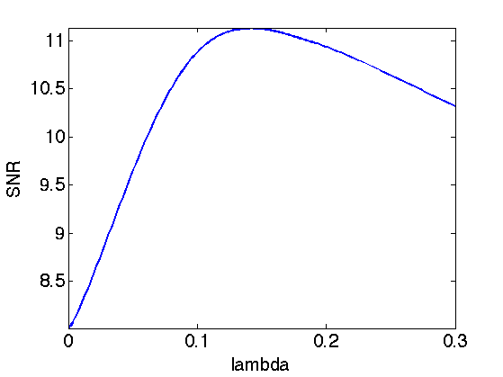
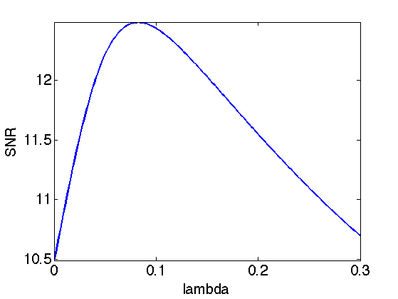
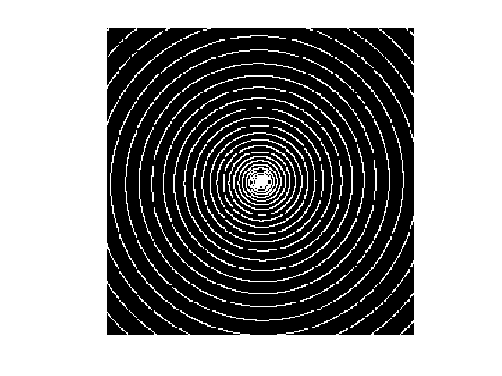

Tomography Inversion using Tikhonov and Sparse Regularization
This numerical tour explores the reconstruction from tomographic measurement with Sobolev and sparse regularization.
Contents
Installing toolboxes and setting up the path.
You need to download the following files: signal toolbox and general toolbox.
You need to unzip these toolboxes in your working directory, so that you have toolbox_signal and toolbox_general in your directory.
For Scilab user: you must replace the Matlab comment '%' by its Scilab counterpart '//'.
Recommandation: You should create a text file named for instance numericaltour.sce (in Scilab) or numericaltour.m (in Matlab) to write all the Scilab/Matlab command you want to execute. Then, simply run exec('numericaltour.sce'); (in Scilab) or numericaltour; (in Matlab) to run the commands.
Execute this line only if you are using Matlab.
getd = @(p)path(p,path); % scilab users must *not* execute this
Then you can add the toolboxes to the path.
getd('toolbox_signal/'); getd('toolbox_general/');
Tomography and Regularization
We consider here tomography measurements \( y = \Phi f_0 + w \), where \(f_0\) is the (unknown) image to recover, and \(w\) is an additive noise.
The tomography operator \(\Phi\) is ill-posed, so it cannot be inverted.
We consider variational reconstruction methods, that finds a solution through a convex optimization: \[f^\star \in \text{argmin}_f \frac{1}{2}\|y-\Phi f\|^2 + \lambda J(f)\]
Where \(J(f)\) is a prior energy. In this tour we consider a a Sobolev prior (the image is uniformly smooth) and a sparse wavelet prior (the image is expected to be compressible in a wavelet basis).
Note that the parameter \(\lambda\) should be carefully chosen to fit the noise level.
Tomography Acquisition over the Fourier Domain
The tomography operator computes the projection of the signal along rays. It corresponds to the Radon transform \[ (T_\theta f)( t ) = \int_{\Delta_{\theta,t}} f(x) d x, \] where \(\Delta_{\theta,t}\) is the line \[ \Delta_{\theta,t} = \{ x = (x_1,x_2) \::\: x_1 \cos(\theta) + x_2 \sin(\theta) = t \}. \]
A tomography measurment computes \[ \{ T_{\theta_i} f \}_{i=0}^{q-1}\] for a small sub-set of \(q\) orientation \( \theta_i \in [0,\pi) \).
Set the number \(q\) of rays used for the experiments.
q = 32;
Size of the image, the number of pixels is \(N=n^2\).
n = 256;
The Fourier Slice Theorem shows that obtaining the measurements \( T_{\theta} f \) is equivalent to computing slice of the 2D Fourier transform of \(f\) along a ray of direction \(\theta\) \[ \hat T_{\theta} f(\omega) = \hat f( r \cos(\theta), r \cos(\theta) ). \]
In this tour, we thus consider a discrete Fourier version of the Tomography operator. It corresponds to sampling the Fourier transform of the image along discretized rays \(\Omega\).
Compute the set of rays \( \Omega \) by computing the mask \( \xi \) so that \( \xi(\omega)=1 \) if \( \omega \in \Omega \) and \( \xi(\omega) = 0 \) otherwise.
Theta = linspace(0,pi,q+1); Theta(end) = []; xi = zeros(n,n); for theta = Theta t = linspace(-1,1,3*n)*n; x = round(t.*cos(theta)) + n/2+1; y = round(t.*sin(theta)) + n/2+1; I = find(x>0 & x<=n & y>0 & y<=n); x = x(I); y = y(I); xi(x+(y-1)*n) = 1; end
In Matlab, the 0 frequency is in the upper-left corner.
xi = fftshift(xi);
Display the mask.
clf; imageplot(fftshift(xi));
Sampling the Fourier transform for points is equivalent to masking the Fourier transform \(\hat f\) of \(f\). We thus define our Fourier tomography measurements operator as \[ \Phi f(\omega) = \hat f(\omega) \xi(\omega) \] where \( \hat f \) is the 2-D discrete Fourier transform of \(f\).
Define a shortcut for the operator. Note the normalization of the FFT by \(1/n\) to make it orthonormal.
Phi = @(f)fft2(f).*xi / n;
Load the clean high resolution image.
name = 'mri';
f0 = load_image(name,n);
f0 = rescale(f0);
We consider here noisy tomographic measurements. \[ y = \Phi f_0 + w \] where \(w\) is a Gaussian white noise of variance \(\sigma^2\).
Variance of the noise.
sigma = .2;
Measurements.
y = Phi(f0) + sigma*randn(n,n);
The pseudo inverse \(\Phi^+\) is equal to the transposed operator \(\Phi^*\). It corresponds to inverting the Fourier transform after multiplication by the mask. \[ \Phi^* y = \Phi^+ y = \mathcal{F}^{-1}( y \xi ), \] where \( \mathcal{F}^{-1}(\hat f) = f \) is the inverse Fourier transform.
Define a shortcut for the transpose operator.
PhiS = @(y)real(ifft2(y.*xi))*n;
Exercice 1: (check the solution) Compute and display the pseudo inverse reconstruction \( \Phi^+ y \). What do you observe ?
exo1;
Sobolev Regularization
To remove some noise while inverting the operator, we can penalize high frequencies using Sobolev regularization.
The Sobolev prior reads: \[J(f) = \frac{1}{2} \sum_x \|\nabla f(x)\|^2 = \frac{1}{2}\sum_{\omega} S(\omega) \|\hat f(\omega)\|^2 \] where \(S(\omega)=\|\omega\|^2\).
Compute the Sobolev prior penalty \(S\) (rescale to \([0,1]\)).
x = [0:n/2-1, -n/2:-1]; [Y,X] = meshgrid(x,x); S = (X.^2 + Y.^2)*(2/n)^2;
We need to compute the solution of: \[f^\star \in \text{argmin}_f \frac{1}{2}\|y-\Phi f\|^2 + \lambda J(f)\]
Regularization parameter \(\lambda\):
lambda = 2;
Since both the prior \(J\) and the operator \(\Phi\) can be written over the Fourier domain, one can compute the solution to the inversion with Sobolev prior simply with the Fourier coefficients: \[\hat f^\star(\omega) = \frac{\hat y(\omega) \xi(\omega)}{ \xi(\omega) + \lambda S(\omega) }\]
Perform the inversion.
fSob = real( ifft2( y .* xi ./ ( xi + lambda*S) ) )*n;
Display the result.
clf; imageplot(clamp(fSob), ['Sobolev inversion, SNR=' num2str(snr(f0,fSob),3) 'dB'] );
Exercice 2: (check the solution) Find the optimal solution fSob by testing several value of \(\lambda\).
exo2;
Display optimal result.
clf; imageplot(clamp(fSob), ['Sobolev inversion, SNR=' num2str(snr(f0,fSob),3) 'dB']);
Soft Thresholding in a Basis
The soft thresholding operator is at the heart of \(\ell^1\) minimization schemes. It can be applied to coefficients \(a\), or to an image \(f\) in an ortho-basis.
The soft thresholding is a 1-D functional that shrinks the value of coefficients. \[ s_T(u)=\max(0,1-T/|u|)u \]
Define a shortcut for this soft thresholding 1-D functional.
SoftThresh = @(x,T)x.*max( 0, 1-T./max(abs(x),1e-10) );
Display a curve of the 1D soft thresholding.
clf;
T = linspace(-1,1,1000);
plot( T, SoftThresh(T,.5) );
axis('equal');
 Note that the function SoftThresh can also be applied to vector (because of Matlab/Scilab vectorialized computation), which defines an operator on coefficients: \[ S_T(a) = ( s_T(a_m) )_m. \]
In the next section, we use an orthogonal wavelet basis \(\Psi\).
We set the parameters of the wavelet transform.
Jmax = log2(n)-1; Jmin = Jmax-3;
Shortcut for \(\Psi\) and \(\Psi^*\) in the orthogonal case.
options.ti = 0; % use orthogonality.
Psi = @(a)perform_wavelet_transf(a, Jmin, -1,options);
PsiS = @(f)perform_wavelet_transf(f, Jmin, +1,options);
The soft thresholding opterator in the basis \(\Psi\) is defined as \[S_T^\Psi(f) = \sum_m s_T( \langle f,\psi_m \rangle ) \psi_m \]
It thus corresponds to applying the transform \(\Psi^*\), thresholding the coefficients using \(S_T\) and then undoing the transform using \(\Psi\). \[ S_T^\Psi(f) = \Psi \circ S_T \circ \Psi^*\]
SoftThreshPsi = @(f,T)Psi(SoftThresh(PsiS(f),T));
This soft thresholding corresponds to a denoising operator.
clf; imageplot( clamp(SoftThreshPsi(f0,.1)) );
Sparse Regularization
To better reconstruct edges, we consider a sparsity regularization in an orthogonal basis \(\{ \psi_m \}_m\): \[ J(f)=\sum_m \vert \langle f,\psi_m \rangle\vert = \| \Psi^* f \|_1. \]
The inverse problem resolution thus require to solve: \[f^{\star} \in \text{argmin}_f \: E(f) = \frac{1}{2}\|y-\Phi f\|^2 + \lambda \sum_m \vert \langle f,\psi_m \rangle\vert. \]
Set up the value of the regularization parameter \(\lambda\).
lambda = 0.1;
To solve this non-smooth optimization problem, one can use forward-backward splitting, also known as iterative soft thresholding.
It computes a series of images \(f^{(\ell)}\) defined as \[ f^{(\ell+1)} = S_{\tau\lambda}^{\Psi}( f^{(\ell)} - \tau \Phi^{*} (\Phi f^{(\ell)} - y) ) \]
For \(f^{(\ell)}\) to converge to a solution of the problem, the gradient step size should be chosen as \[\tau < \frac{2}{\|\Phi^* \Phi\|}\]
Since \(\Phi\) is an operator of norm 1, this must be smaller than 2.
tau = 1.5;
Initialize the solution.
fSpars = PhiS(y);
First step: perform one step of gradient descent of the energy \( \|y-\Phi f\|^2 \).
fSpars = fSpars + tau * PhiS( y-Phi(fSpars) );
Second step: denoise the solution by thresholding.
fSpars = SoftThreshPsi( fSpars, lambda*tau );
Exercice 3: (check the solution) Perform the iterative soft thresholding. Monitor the decay of the energy \(E\) you are minimizing.
exo3;
Display the result.
clf; imageplot(clamp(fSpars), ['Sparsity inversion, SNR=' num2str(snr(f0,fSpars),3) 'dB']);
Exercice 4: (check the solution) Try to find the best threshold \(\lambda\). To this end, perform a lot of iterations, and progressively decay the threshold \(\lambda\) during the iterations. Record the best result in fBestOrtho.
exo4;
Display the result.
clf; imageplot(clamp(fBestOrtho), ['Sparsity in Orthogonal Wavelets, SNR=' num2str(snr(f0,fBestOrtho),3) 'dB']);
Translation Invariant Regularization
Denoising artefact are reduced by using a translation invariant wavelet frame.
Define new shortcut for the translation invariant wavelet transforms.
options.ti = 1; Psi = @(a)perform_wavelet_transf(a, Jmin, -1,options); PsiS = @(f)perform_wavelet_transf(f, Jmin, +1,options);
Re-define the thresholding.
SoftThreshPsi = @(f,T)Psi(SoftThresh(PsiS(f),T));
Exercice 5: (check the solution) Use the iterative thresholding but this time with the translation invariant wavelet transform. Find the best value of \(\lambda\) and record the best result in fBestTI.
exo5;
Display the result.
clf; imageplot(clamp(fBestTI), ['Sparsity in TI Wavelets, SNR=' num2str(snr(f0,fBestTI),3) 'dB']);
Medical Resonnance Imaging
MRI acquisition directly gather Fourier measurement along a curve in the Fourier plane.
Create a spiral for the sampling. The parameter \(\alpha\) controls the density near the origin.
alpha = 3; q = 30; t = linspace(0,1.5,n*q*10); x = round(.5*n*t.^alpha.*cos(2*pi*q*t)) + n/2+1; y = round(.5*n*t.^alpha.*sin(2*pi*q*t)) + n/2+1; I = find(x>0 & x<=n & y>0 & y<=n); x = x(I); y = y(I); xi = zeros(n,n); xi(x+(y-1)*n) = 1;
Display the sampling pattern.
clf; imageplot(xi);
Exercice 6: (check the solution) Compare Sobolev and Sparse reconstruction for MRI imaging. For a given number of Fourier sample, compare the quality of the reconstruction for different \(\alpha\).
exo6;